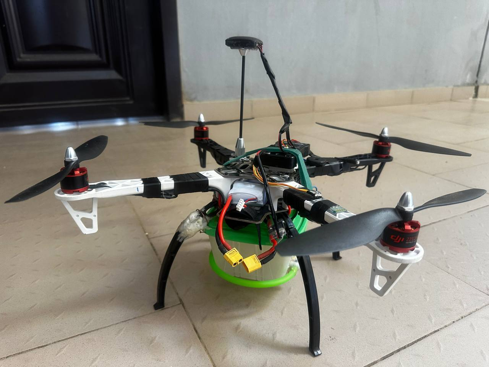

AI-Based Autonomous Crop Disease Detection and Control Drone
An autonomous drone system that uses AI to detect crop disease at an early stage and responds by autonomously spraying pesticide to control the spread, aimed at improving crop yield and reducing manual field monitoring.